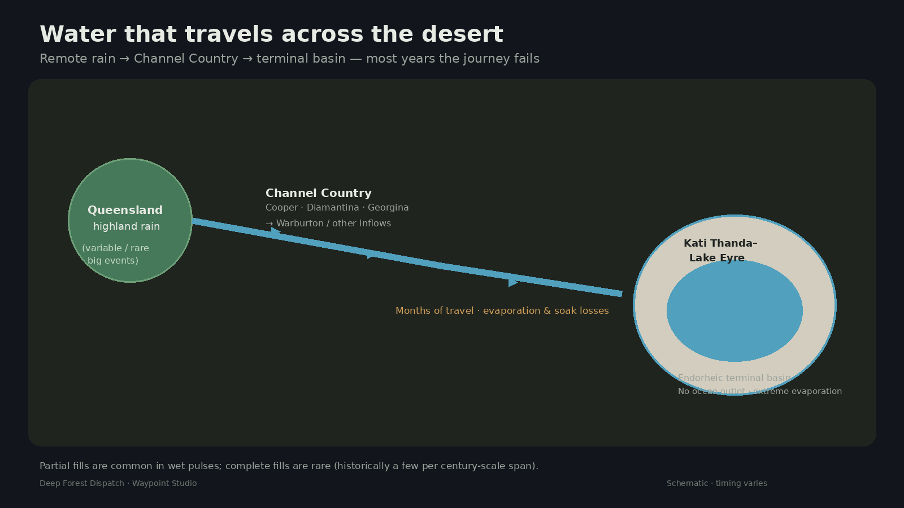
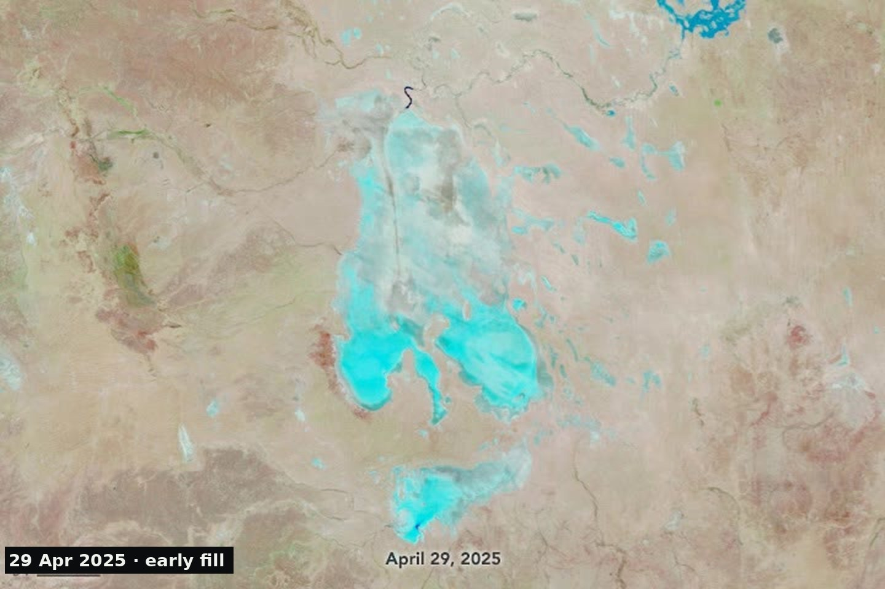
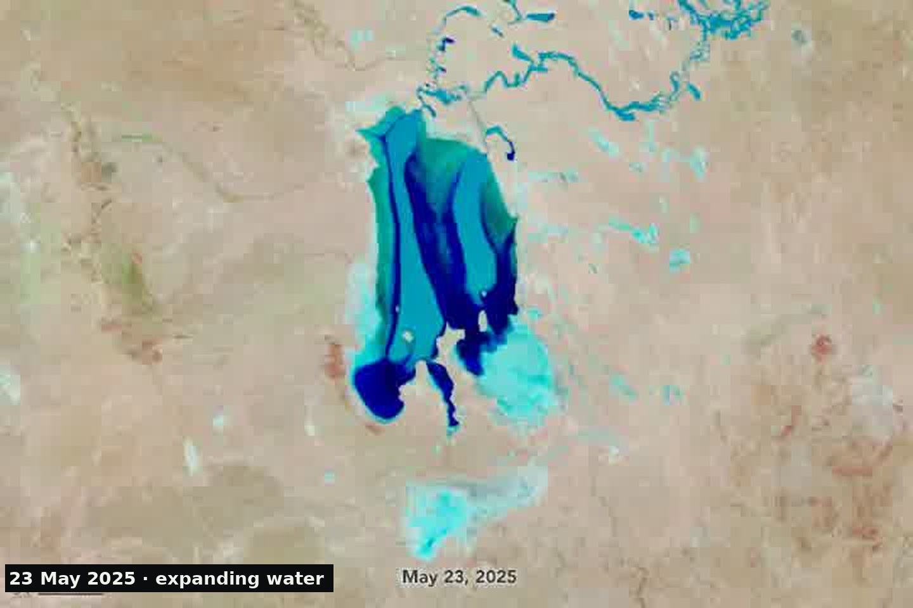

The same basin, two landscapes
Kati Thanda–Lake Eyre sits at Australia’s lowest point — usually a bright salt crust in the arid heart of the continent. Local rainfall is thin. The spectacle begins elsewhere.
About one-sixth of Australia drains toward this endorheic basin. When Queensland and Channel Country flood hard enough, water can travel hundreds of kilometers across the outback. Much of it never arrives. What does can turn the pan into a temporary inland water body — sometimes called an “inland sea” in the figurative sense, not a marine sea.

Partial fills vs rare complete fills
Water reaches the lake more often than tourists’ legends suggest — but complete fills are rare. NASA Earth Observatory notes only a few full fills in roughly the last 160 years, with 1974 among the deepest (~6 meters). Partial flooding is the ordinary “wet” story.


Why the journey usually fails
Cooper, Diamantina, Georgina and related systems braid through Channel Country before feeding northern and eastern approaches to the lake. On the way: soak, delay, and relentless evaporation. Once inflows stall, summer heat finishes the water. After major fills, drying can take years.
The durable lesson is not annual flooding. It is a terminal basin waiting on rare, distant rain — and a landscape that can look like two different planets depending on whether that water survives the desert.